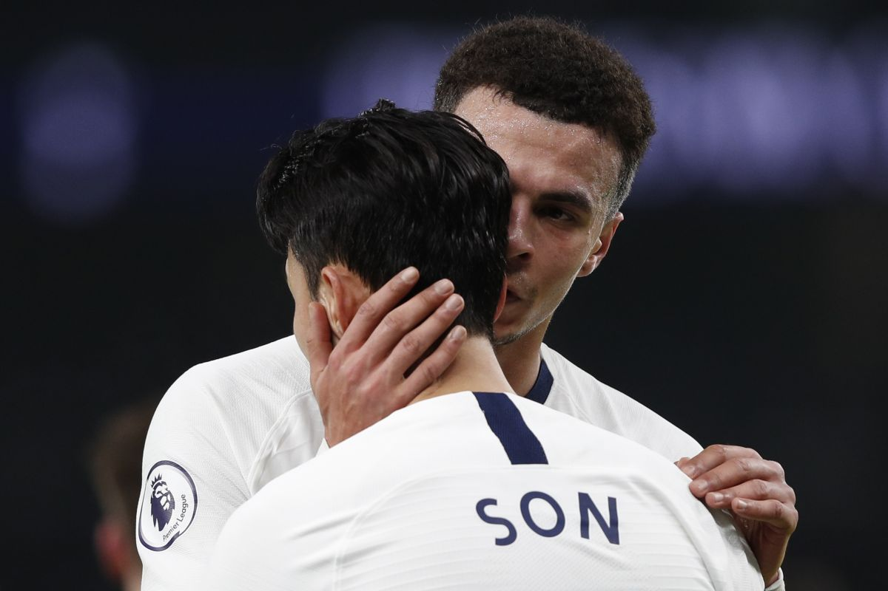

흑색에 가까운 갈색빛의 눈동자가 나를 집요하게 응시한다. 평소와 다를 것은 없었다. 여느 때처럼 다정함이 묻어 있는 눈빛. 그러나 이질적인 점은….
“아무렇지 않느냐고.”되물어오는 물음에 시선을 돌리며 얼버무렸다. D는 모호한 얼굴로 김빠지는 웃음소리를 냈다. 어쩌면 작게 욕설을 중얼거리는 것 같기도 했다. 사실 신경 쓰이지 않는다면 거짓말이다. 어젯밤엔 그 문제로 잠까지 설쳤고, 설핏 얕게 잠에 들었다가도 꿈에서도 불쑥 생각나는 바람에 놀라 잠에서 깨곤 했으니까. 그런 이유로 나는 오늘 D에게 왜 그랬냐며 의중을 물었을 수도, 미쳤냐며 욕을 내뱉을 수도 있었다. 그렇게 하지 않은 이유는 단 하나였다.
내 이름을 부르는 D의 눈에서, 처음으로.
집착을 읽었다. 오늘 아침, 아니 조금 전까지만 해도 알 수 없던 사실을 그 순간에 깨달았다. D의 다정함이 포장하고 있던 감정을.
그냥, 그뿐이다.